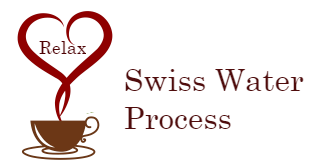
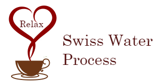
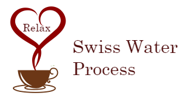
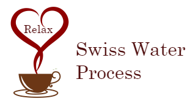
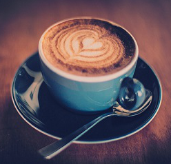
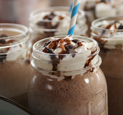
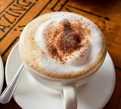
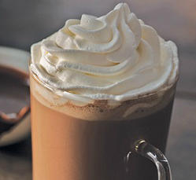
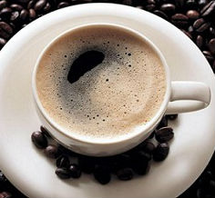

 

We are not just marketers, finance people, and sales reps. We are enthusiasts with a passion for one thing. Amazing coffee. Well maybe we are also passionate about small dogs, donuts, long hugs, warm smiles, and good company. Meet the people committed to making great coffee happen every day at Swiss Water Decaffeinated Coffee Company.
|  |
Latte A latte is a coffee drink made with espresso and steamed milk. |
|  |
Mocha Like a caffe latte, it is typically one third espresso and two thirds steamed milk, |
|  |
Cappuccino Our baristas steam the milk for a cappuccino, microfoam is created by introducing very tiny bubbles of air into the milk, |
|  |
Frappuccino Frappuccino is a blended coffee beverages developed and sold by Starbucks who have trademarked the name. |
|  |
AmericanoAmericano is a style of coffee prepared by brewing espresso with added hot water, giving it a similar
|